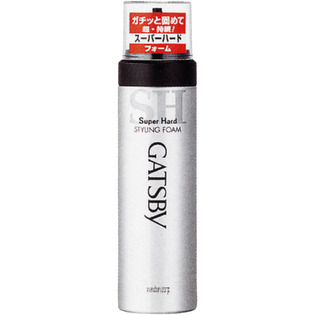

返回列表
产品名称：ギャツビー スタイリングフォーム スーパーハード

マンダム ギャツビー スタイリングフォーム スーパーハード １８５ｇ
メーカー マンダム
JANコード 4902806583069
商品の特徴
ゴワつかず湿気の多い日も強力セット超持続。
- 成分・分量
- 水、ＬＰＧ、エタノール、（アクリル酸アルキル／ジアセトンアクリルアミド）コポリマーＡＭＰ、グリセリン、ＰＶＰ、ミネラルオイル、ジグリセリン、（Ｃ１２-１４）パレス-３、ＰＥＧ-５０水添ヒマシ油、パンテノール、セテス-１５、ステアリン酸ソルビタン、ステアルトリモニウムクロリド、メチルパラベン、ブチルパラベン、香料
- 用法及び用量
- ○上向きで使うとガスだけが出て中味が残ります
○乾いた後に髪にブラシ等を通すと 白い粉が出ることがあるので避けてください
○低温下 泡になりにくいときは ぬるま湯につけてからお使いください